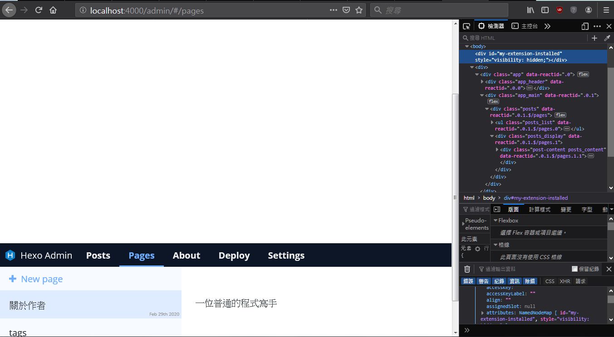
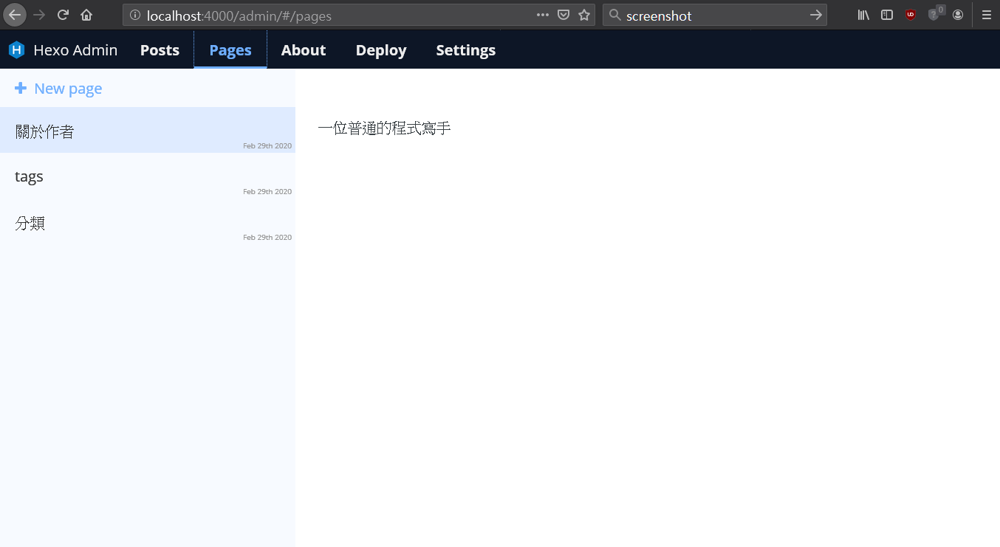

初入 hexo-admin
hexo-admin 是方便管理 hexo 網站的一個套件，比起使用指令來新增頁面，並自行修改 Markdown 文件，hexo-admin 使用 GUI 進行文章與頁面的新增，並可以直接對現有的 .md 文件進行編輯和預覽，並可以一鍵發布草稿，簡化了發布文章的流程，操作上也比較直觀。
安裝
- 進入本地端的 hexo 資料夾
- 使用
npm install -save hexo-admin安裝 hexo-admin - 完成安裝
使用
- 進入本地端的 hexo 資料夾
- 執行
hexo s或hexo s -g開啟 local 測試伺服器 - 透過瀏覽器進入
http://localhost:4000/admin使用 hexo-admin
使用 hexo-admin 遇到的一些問題
hexo-admin 跑版問題
我個人是習慣使用 firefox 瀏覽器，但是在使用 hexo-admin 時發現了 hexo-admin有跑版的現象，但是怎麼找都找不到有遇到類似的問題，只好自行研究了

暫時的解決方法：
- 先進入
hexo\node_modules\hexo-admin\www裡面會有進入 admin畫面的基本頁面資訊 - 使用 notepad++ 之類的軟體開啟
index.php檔案 - 在
<header>的最下方加入下面這一段：
1 | <script> |
- 重新進入
http://localhost:4000/admin就會套用了
